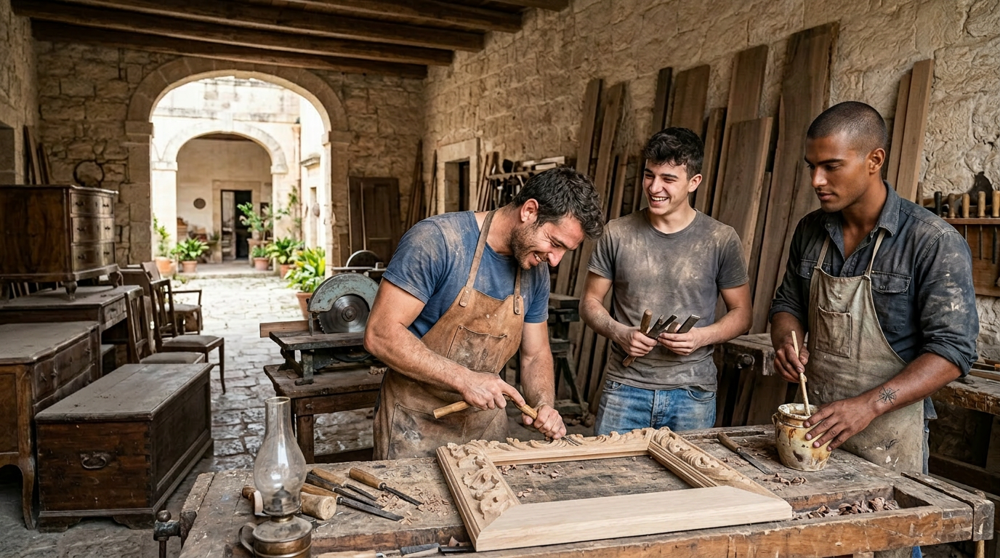
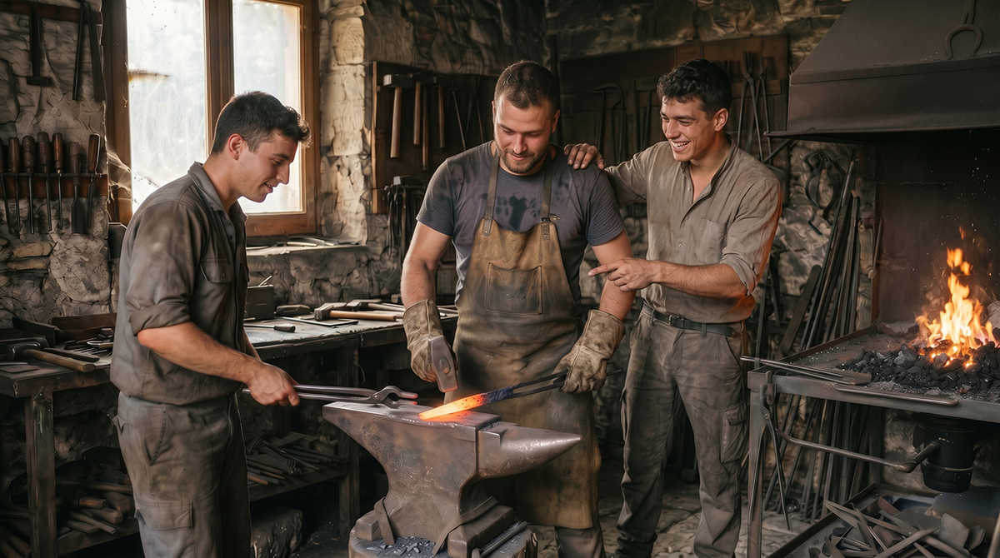
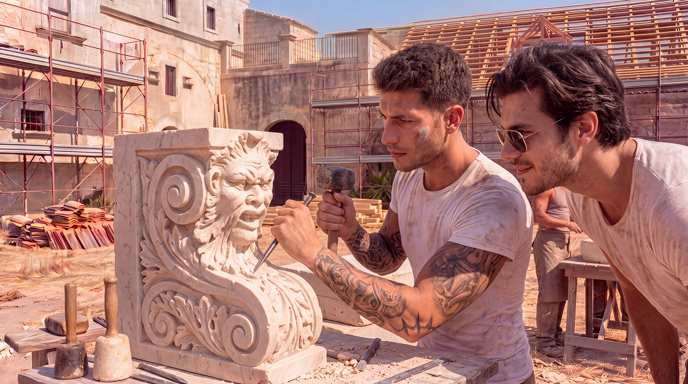
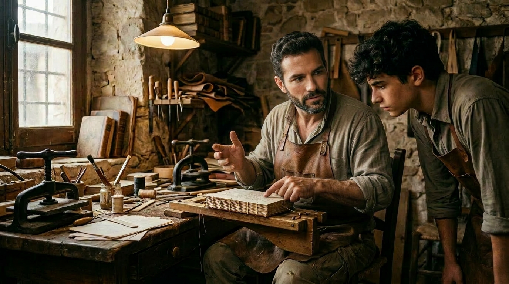
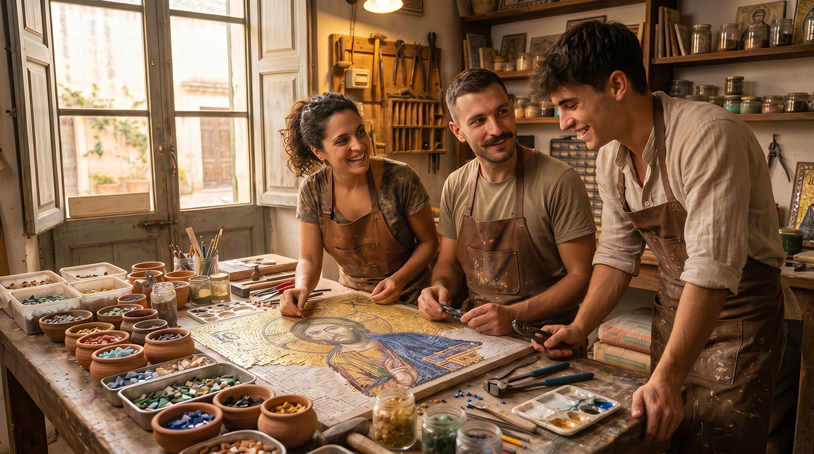
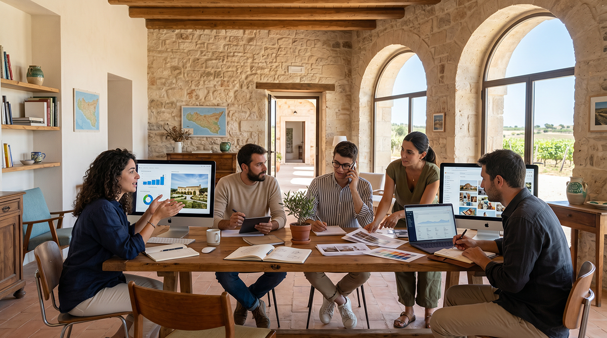
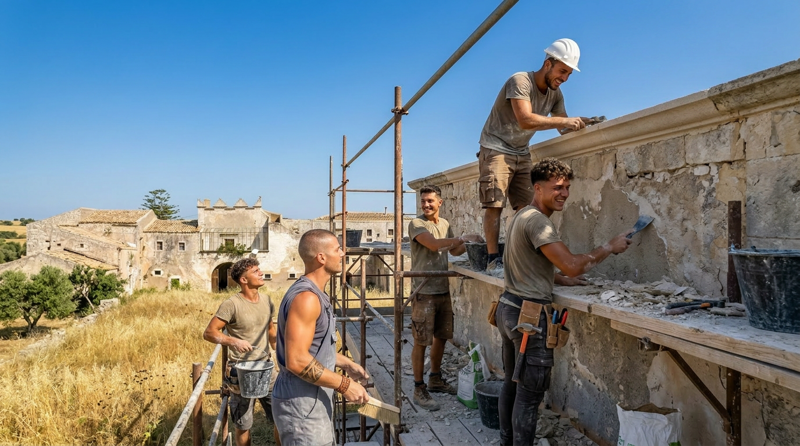

Archivum Artium is the living heart of education at Baglio San Michele. It is not a conventional school, but a living place where traditional arts and crafts are learned through doing, observing, and sharing, within the daily life of the community.
Here the ancient knowledge of Sicily — from cabinetmaking to stone, iron, and plaster work — is preserved, practiced, and passed on to new generations, in harmony with the Christian, family, and rural values that animate our project.
Our Mission
To train artisans, artists, and professionals capable of contributing to the autonomy and beauty of the Borgo, preserving traditional techniques and integrating them with an ethic of responsibility, beauty, and faith.
To offer the children and young people of the Baglio a concrete and creative education, complementary to formal schooling, that roots them in Sicilian culture and prepares them for real and dignified professions.
To create a center of attraction for master artisans, enthusiasts, and families who wish to learn or transmit ancient knowledge in an authentic community context.
Disciplines and Workshops

Cabinetmaking & Ebanisteria
Working with local wood, restoration of antique furniture, creation of furnishings for the homes of the Borgo and everyday objects using traditional techniques.

Metalworking
Forging, wrought iron and artistic metalwork: gates, lamps, tools and decorative pieces for the spaces of the Baglio and the surrounding territory.

Stone Carving
Sculpture and working of local stone (Ragusa stone, limestone) for architectural elements, furnishings and artistic works.

Plaster Modeling & Decorations
Artistic plasterwork: stuccoes, wall decorations, moldings and ornamental elements for interiors and historic architecture.

Traditional Typography & Bookbinding
Letterpress printing, hand bookbinding, creation of art books, notebooks and paper materials using both ancient and contemporary techniques.

Mosaic Techniques
Traditional and contemporary mosaic in stone, ceramic and glass: floors, decorative panels and artistic works for interiors and exteriors.
Education for All Ages
For Children and Young People
Afternoon and weekend workshops integrated into school and family life. Young people learn by doing, alongside resident master artisans, developing manual skills, patience, creativity and a sense of responsibility.
For Adults and Residents
Structured courses, apprenticeships and masterclasses with internal and external masters. Paths that allow participants to acquire skills that are valuable for the economy of the Borgo and for a more autonomous and creative life.
Sustainability, Innovation and Competitiveness

To ensure longevity and relevance for Archivum Artium, we integrate traditional techniques with modern approaches:
Contemporary design applied to traditional techniques
The union of modern aesthetics and ancient knowledge to create beautiful, functional and contemporary objects and environments.
Entrepreneurship and territorial marketing
Development of skills in sales, branding and cultural tourism of Sicilian craftsmanship.
Digitization of heritage
3D documentation of techniques, virtual archives and digital catalogs to preserve and disseminate knowledge.
Environmental sustainability
Use of local materials, low-impact processes and circular economy practices.
Ethics of conservation and intergenerational transmission
Every workshop is also an act of responsibility toward the past and future generations, in keeping with the Christian and communal vocation of the Baglio.
Workshops, Apprenticeships and Experiential Paths

Beyond structured teaching, Archivum Artium strengthens practical and immersive learning models:
Workshops and apprenticeships with master artisans — A model also being developed in Sicily through municipal and regional projects, where young people work alongside experienced masters in a real context of work and community life.
Summer workshops and short specialized courses — Intensive experiences on targeted techniques (ceramic mosaic, artistic bookbinding, traditional weaving, etc.) open to residents and external participants.
Structured collaborations — Stable networks between educational institutions, trade associations, historic workshops and the territorial Consortium to ensure quality, recognition and continuity of training paths.
Integration into Community Life
The workshops of Archivum Artium are not isolated spaces: they are part of daily life. The products created (furniture, ceramics, textiles, icons) furnish the homes and common spaces of the Baglio, are sold at local markets and in the Baglio’s own workshop.
Every craft is lived as an act of stewardship of creation and service to the community, in line with the Christian and traditional values that guide us.
Progressive Implementation
Phase 0 (September 2026 – March/April 2027) — Operational design of the workshops: surveys and technical reports on the rooms to be assigned to the crafts, and the choice of trades compatible with the spaces of the Baglio.
Phase 1 (2027-2029) — Launch of the first workshops in the restored historic Baglio (cabinetmaking, stone carving, plasterwork) with resident masters and courses for the first children and families.
Phase 2 (post-2029) — Expansion with new workshops (forging, bookbinding, mosaic techniques) and opening of training paths also for external participants interested in an immersive experience.
Would you like to learn or teach an ancient craft?
Whether you are an experienced artisan, an enthusiast, or a family that wants this education for your children, Archivum Artium welcomes you.